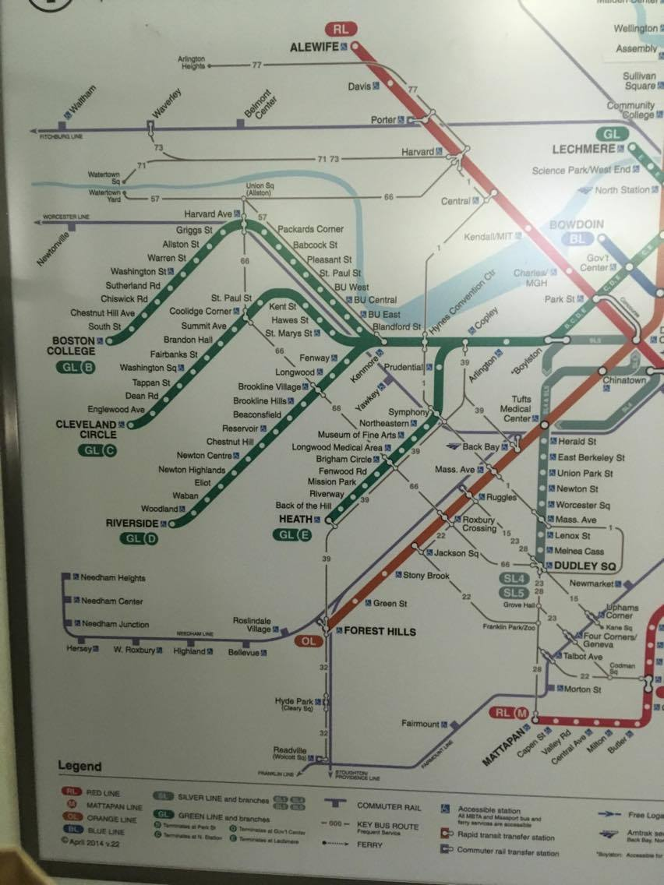
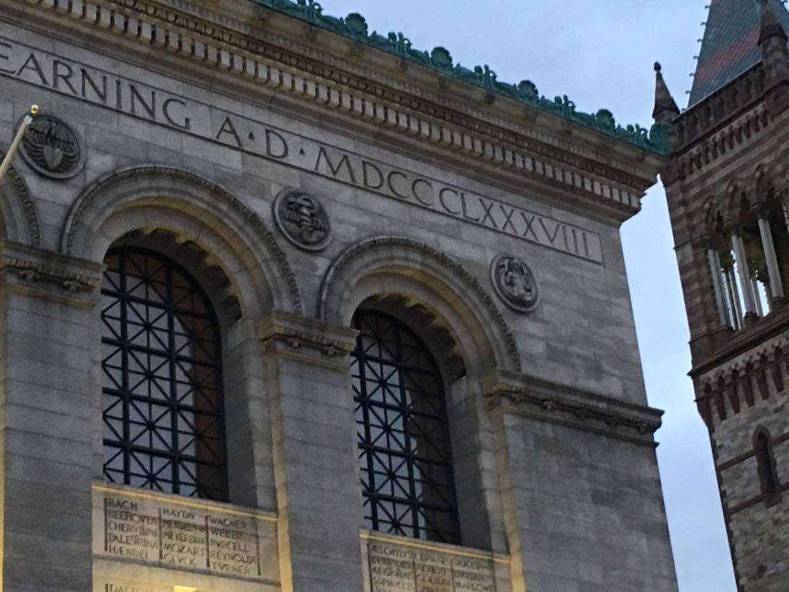
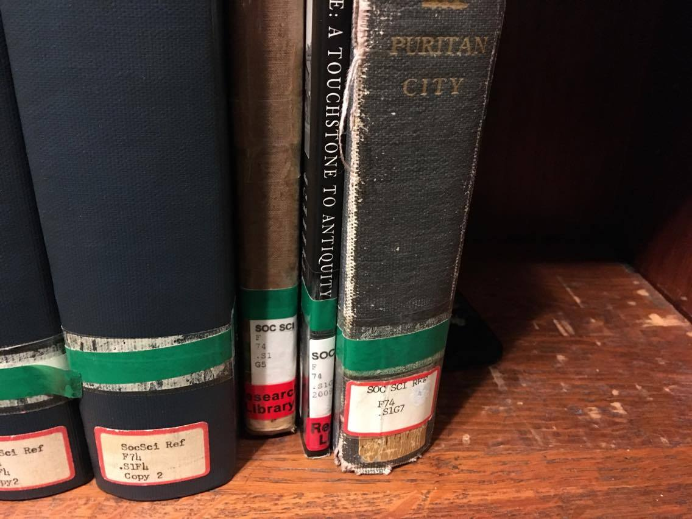
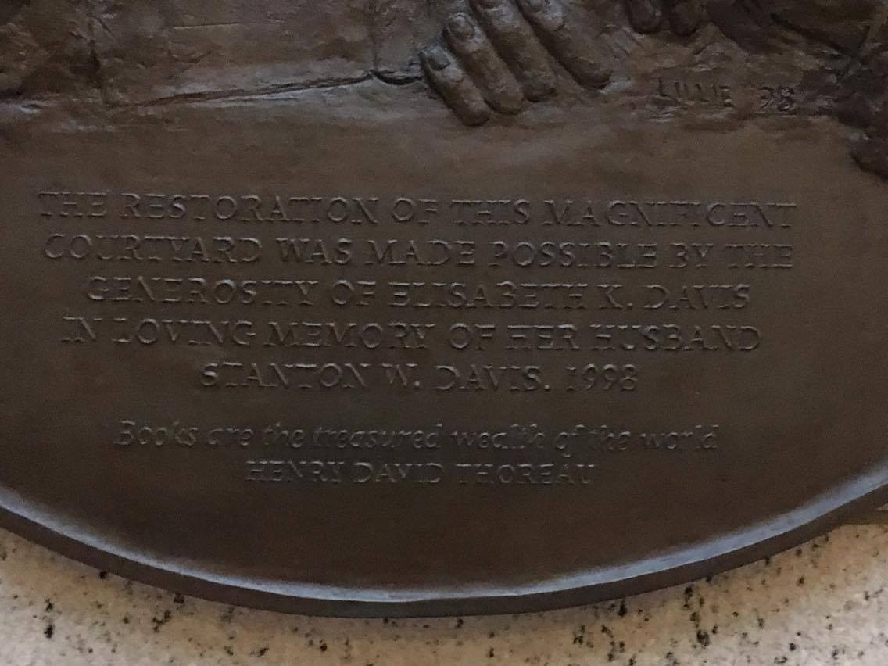

Pages
Home
Station
Symphony Hall
Reflection Pool
Inside the BPL
Courtyard of the BPL
Ending
Supplementary Photos
   
Media
Swan Lake mvmt 1: Intro, Pyotr Ilyich Tchaikovsy, courtesy of the European Archive and Musopen, public domain
Water sounds, Lisa Redfern, courtesy of Soundbible, public domain